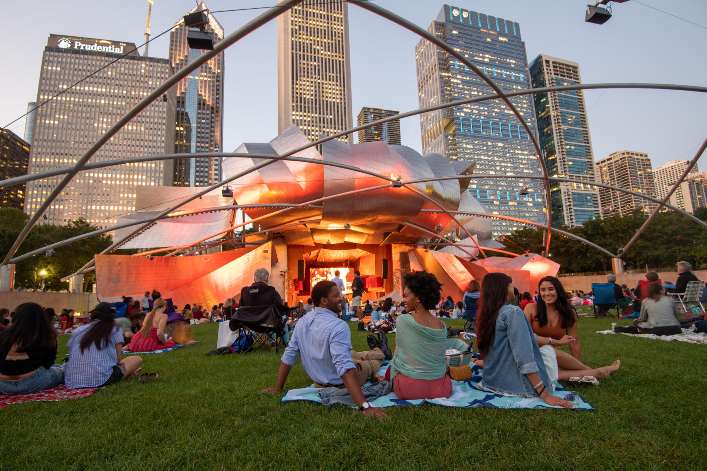

Future and Goals
Throughout my life I have never really been someone that likes to stay in one place I enjoy exploring so I can be more knowledgeable. From doing simple class projects to attending lectures I am eager to learn. At the University of Missouri, I have not only improved my social skills but have also become more aware of society and understanding things I believed to be complex such as accounting, as well as banking and finance
I have worked only a few places but just finished an internship and now understand some aspects of the real world which have been a major aid. Experiences such as that open your eyes to more things around you. With that being said as life continues to get more difficult as college gets close to ending, valuing experiences of travel and being around friends is essential because making time for it after is hard.
In the future I hope to get a job based strictly off my major. However, that can be difficult depending on how many jobs are filled in my area of study. I would like to make enough money so that I can travel often and explore more, to gain more photos for this website. I have already been out of the country many times and I believe with more knowledge gained from finishing college I will enjoy it more.My goal for this website is to develop into something that catches people's attention and makes them want to explore. I would like the articles to be enjoyable, relaxing and nothing serious.The courses I have already taken at the University of Missouri can really help due to taking English courses, web design courses, and simulation courses
Email:DRWGBG@umsystem.edu
Number:1-888-888-8888
Copyright 2022